Wunderland Rabbits
A photo project of the rabbits Rek and Dev touring Vancouver Island with their good friends, Kay and Rik.
Rek & Dev never have photos of themselves together, but Kay sends them photos after every trip. It is now tradition for all of Kay's pics to become rabbit tour pics.
The project started in March 2021. So far, the rabbits have travelled to Secret Island, Rhodo Ravine, Swartz Bay, Tenedos Bay in Desolation Sound, Patricia Bay, the Odgen Point Breakwater, the top of Mount Pkols, Witty's Lagoon and the Victoria Inner Harbour.
Process: I only ever use photos sent by Kay, which are low-res phone photos which I upscale, paint over and dither (with a custom palette) using the Atkinson algorithm. I never ask Kay to take the photos, she does, or she doesn't and she sends them to me, or doesn't! It's a timepiece of sorts, a view of ourselves through Kay's eyes, with us as rabbits. Our sailor nickname has been the rabbits for a long time, so it is rather fitting.

 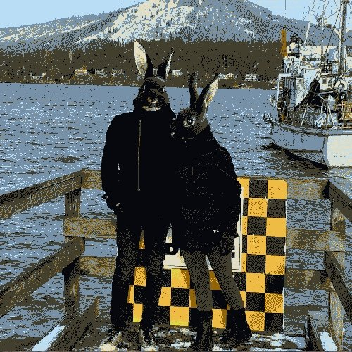
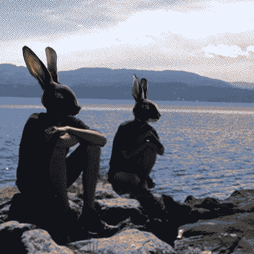
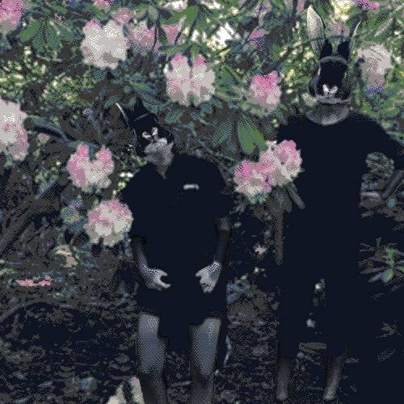
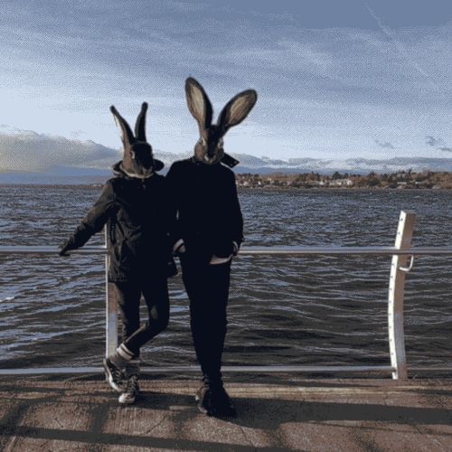
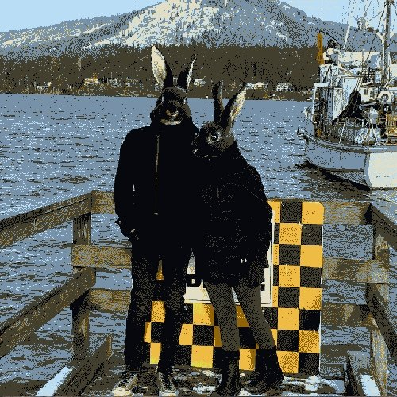
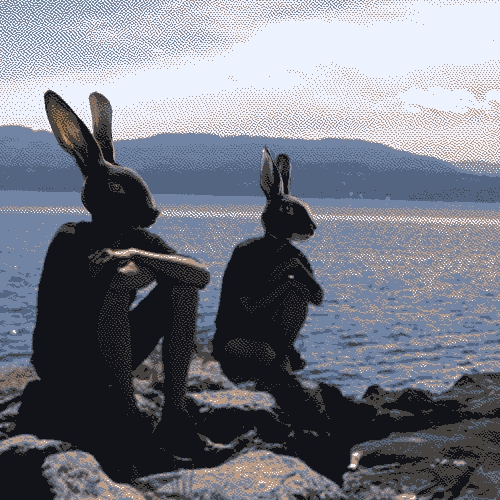
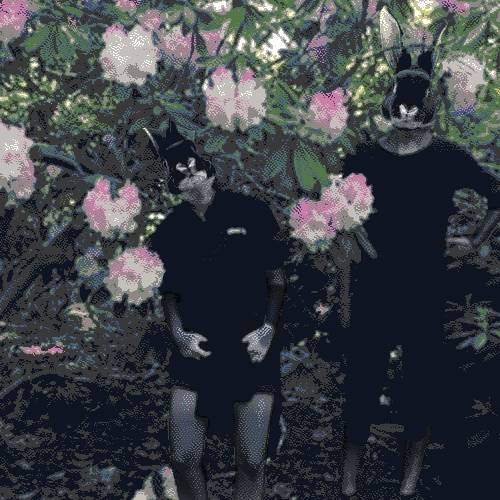
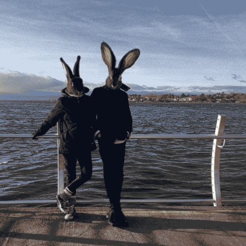
 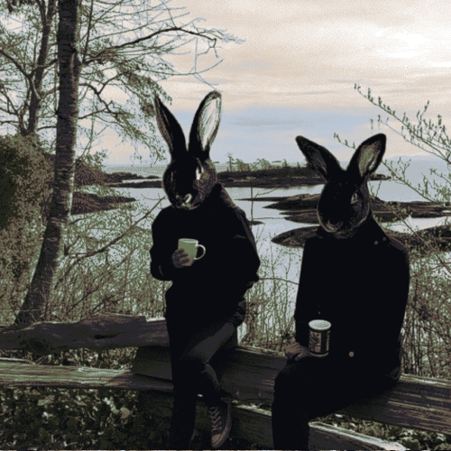
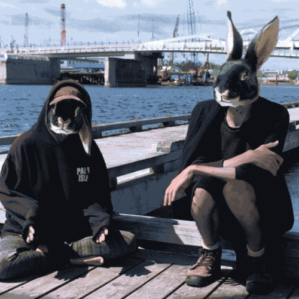
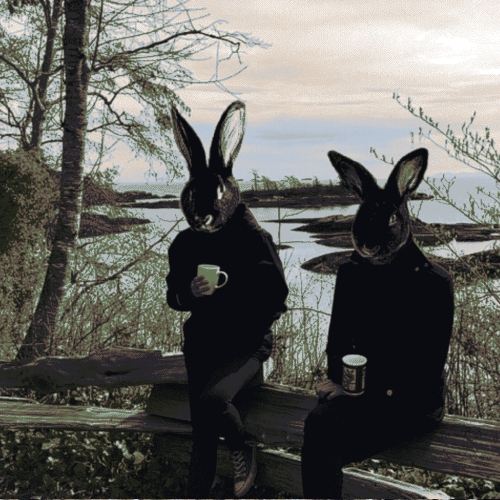
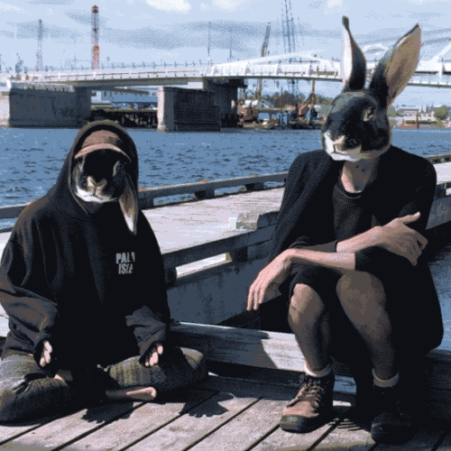
Images of Black Otter Rex Rabbits heads used as reference with permission from National Otter Rex Club. Image of Jack Rabbit by Jim Harper.